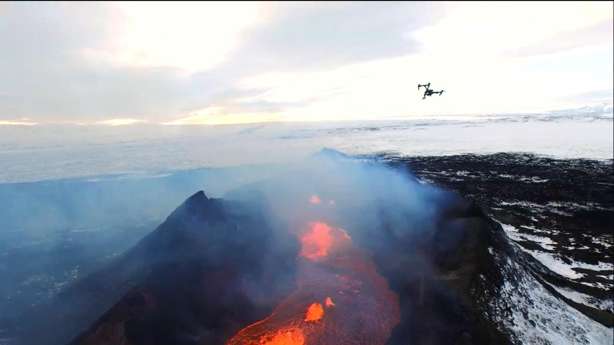

Drones can be used as an effective asset in bringing the most out of certain activity, job or hobby, as being about 100 meters in the air allows one a view which he could not get otherwise , for example sacrificing a drone in order to get a good look inside a volcano, or watching animal wildlife in a different, more close way.
